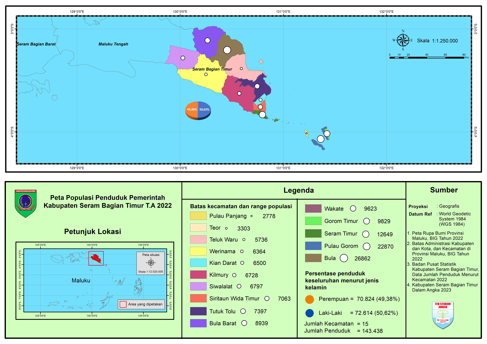

Assalamualaikum Warahmatullahi Wabarakatuh dan selamat pagi, siang, sore, malam.
Tema Besar kami yaitu "Kajian Holistik Peta Tematik Persebaran Tingkat Populasi Penduduk Kabupaten dan Kota di Provinsi Maluku". Perlu diingat bahwa data yang kami sajikan merupakan data update terakhir di tahun 2022 dari berbagai sumber, namun sebagian besar dari website Badan Pusat Statistik (BPS) Maluku, baik Kabupaten maupun Kota. Sedangkan data pemetaan kami ambil dari website Indonesia Geospatial Portal dan Lapak GIS . Untuk tutorial pembuatan peta bisa melalui link ini.
- Adapun nama-nama anggota tim kami, yaitu:
- 1. Chairil Ali
- 2. Nana Jayani Rumauw
- 3. Sumiati Mahu
- 4. Ayu Sabban
- 5. Ismawati Marasabessy
- 6. Risma Adinda Sakinah
- 7. Friske Lakoruhut
- 8. Muh. Fausan
- 9. Irfan Pattinasarany
- 10.Samrah Daeng Makase
Peta Populasi penduduk Kota Ambon

Peta populasi penduduk Kabupaten Maluku Barat Daya

Peta populasi penduduk Kabupaten Maluku Tengah

Peta populasi penduduk Kabupaten Kepulauan Tanimbar

Peta populasi penduduk Kabupaten Seram Bagian Barat

Peta populasi penduduk Kabupaten Maluku Tenggara

Peta populasi penduduk Kabupaten Kepulauan Aru

Peta populasi penduduk Kabupaten Buru Selatan

Peta populasi penduduk Kabupaten Buru

Peta populasi penduduk Kabupaten Seram Bagian Timur
Thank You 😊
Tim ArcGIS - SI7D